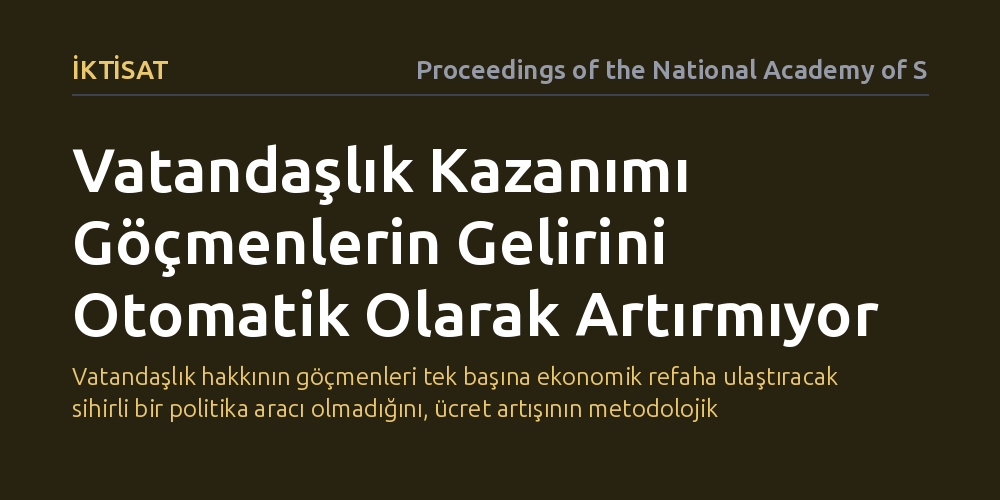

IKTISAT · Proceedings of the National Academy of Sciences · 2026-10-09
Araştırmacılar, vatandaşlığa geçişin göçmenlerin ücretlerini ve ekonomik hareketliliğini artırıp artırmadığını mevcut literatürü meta-analizle sentezleyerek inceledi. Sonuçlar, yaygın kabulün aksine ekonomik getirinin otomatik olmadığını ve bulguların doğrudan araştırma tasarımına bağlı olduğunu gösterdi.
Vatandaşlık hakkının göçmenleri tek başına ekonomik refaha ulaştıracak sihirli bir politika aracı olmadığını, ücret artışının metodolojik yanılsamalardan arındırıldığında çok daha sınırlı kalabildiğini gösterir.

Göçmenlerin entegrasyonu ve iş gücü piyasasında tutunması, çağdaş iktisat ve kamu politikalarının en temel tartışma başlıklarından biridir. Siyaset yapıcılar ve geleneksel akademik yaklaşımlar, vatandaşlığa kabul edilmenin göçmenlerin maaşlarını yükselten ve daha nitelikli işlere erişimini sağlayan güçlü bir ekonomik kaldıraç olduğunu savunur. Buradaki temel varsayım, hukuki engellerin kalkmasıyla ayrımcılığın azalacağı ve bireyin piyasadaki pazarlık gücünün artacağı yönündedir.
Ancak bu kabul, kritik bir soruyu göz ardı eder: Gözlemlenen gelir artışı gerçekten vatandaşlık belgesinin kendisinden mi kaynaklanıyor, yoksa vatandaşlığa başvuran göçmenlerin zaten daha azimli, dil becerisi yüksek ve uyum sağlamış bireyler olmasından mı ileri geliyor? Eğer aradaki fark yalnızca bireysel niteliklerin bir yansımasıysa, vatandaşlığı tek başına refah garantisi olarak sunmak hem göçmenleri hem de politika yapıcıları yanıltabilir.
Araştırmacılar bu soruyu yanıtlamak için tek bir ülkeye ya da dar bir örnekleme odaklanmak yerine, literatürde bugüne kadar yapılmış ampirik çalışmaları bir araya getiren kapsamlı bir meta-analiz yürüttü. Göçmenlerin vatandaşlığa geçişi ile ücret kazanımları arasındaki ilişkiyi inceleyen onlarca bağımsız araştırmanın bulguları istatistiksel olarak derlendi. Böylece farklı coğrafyalardan ve farklı göçmen gruplarından elde edilen veriler ortak bir zeminde değerlendirildi.
Literatür taramasının ötesine geçen çalışmada, ekonometrik meta-regresyon teknikleri kullanılarak iki kritik faktör kontrol edildi: yayın yanlılığı ve araştırma tasarımı. Akademik dergilerin yalnızca istatistiksel olarak anlamlı ve olumlu sonuçları yayımlama eğilimi hesaba katıldı. Ayrıca, basit gözlemsel korelasyonlara dayanan modeller ile bireylerin zaman içindeki değişimini izleyen veya politika reformlarını kullanan daha sıkı nedensel tasarımlar arasındaki farklar titizlikle ayrıştırıldı.
Elde edilen bulgular, vatandaşlığın göçmen ücretlerine doğrudan ve yüksek bir getiri sağladığı yönündeki yaygın akademik özeti ciddi biçimde sarsmaktadır. Analiz, literatürde sıklıkla raporlanan pozitif vatandaşlık priminin büyük ölçüde zayıf araştırma tasarımlarından ve yayın yanlılığından kaynaklandığını gösterdi. Metodolojik açıdan nedenselliği net biçimde kuramayan çalışmalar, aslında göçmenin kendi kişisel yeteneklerinin sağladığı avantajı vatandaşlık belgesine mal ediyordu.
Daha sıkı nedensel denetimler içeren ve yayın yanlılığı düzeltmesi uygulanan sentez modellerinde, vatandaşlığa geçişin sağladığı ortalama doğrudan ekonomik getirinin çok daha zayıf veya koşullu olduğu anlaşıldı. Başka bir deyişle, pasaportu almak tek başına bir göçmenin maaşını kendiliğinden artıran otomatik bir güvence sağlamamaktadır; gözlenen yüksek getirilerin önemli bir kısmı yöntem hatasından kaynaklanan bir yanılsamadır.
Bu çalışma, göç politikalarının yalnızca hukuki statü değişikliğine bel bağlayamayacağını net biçimde ortaya koymaktadır. Vatandaşlık elbette siyasi katılım, aidiyet ve temel haklar açısından vazgeçilmez bir haktır; ancak bunu tek başına göçmenlerin gelir eşitsizliğini çözecek bir ekonomik kaldıraç olarak görmek gerçekçi değildir. Hükümetlerin göçmen refahını artırmak için yalnızca vatandaşlık süreçlerini hızlandırması, iş gücü piyasasındaki derin yapısal sorunları çözmeye yetmeyecektir.
Gerçek ekonomik hareketlilik için mesleki diploma denkliği, dil eğitimi, iş yerinde ayrımcılıkla mücadele ve yerel ağlara erişim gibi tamamlayıcı mekanizmalara odaklanmak gerekir. Araştırmanın mesajı açıktır: Göçmenlerin ekonomik başarısı sadece pasaportun rengine değil, iş gücü piyasasının kapsayıcılığına ve göçmenlerin gerçek becerilerini ne ölçüde değerlendirebildiğine bağlıdır.